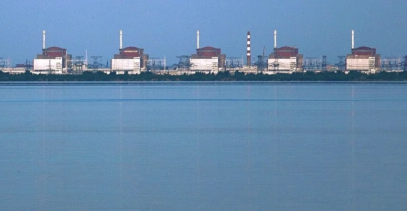
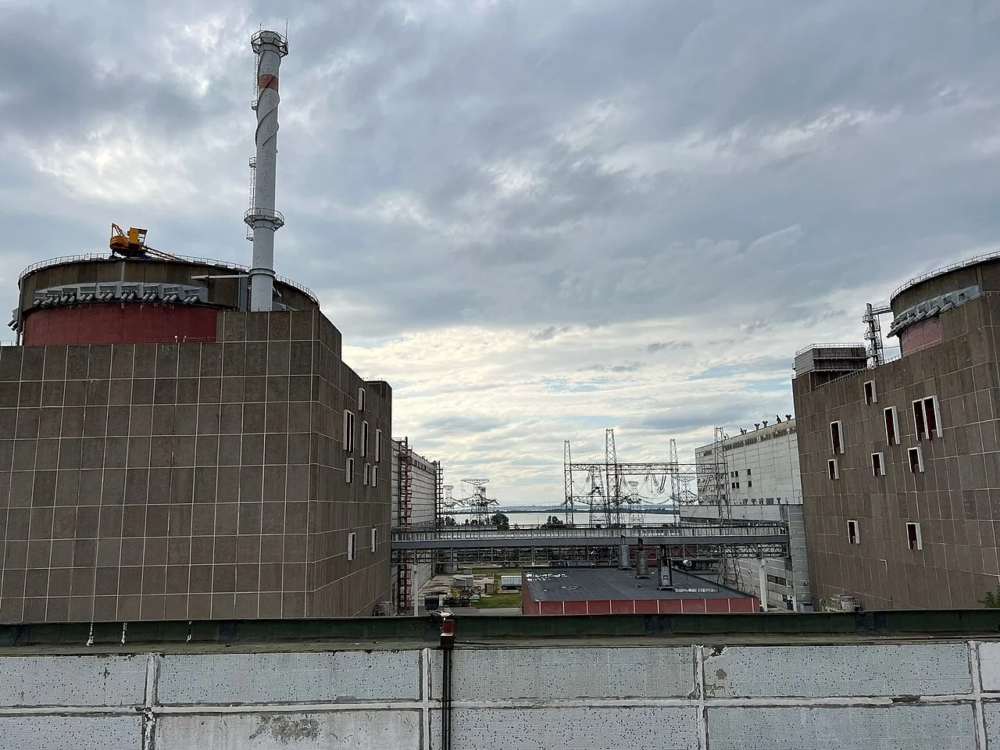
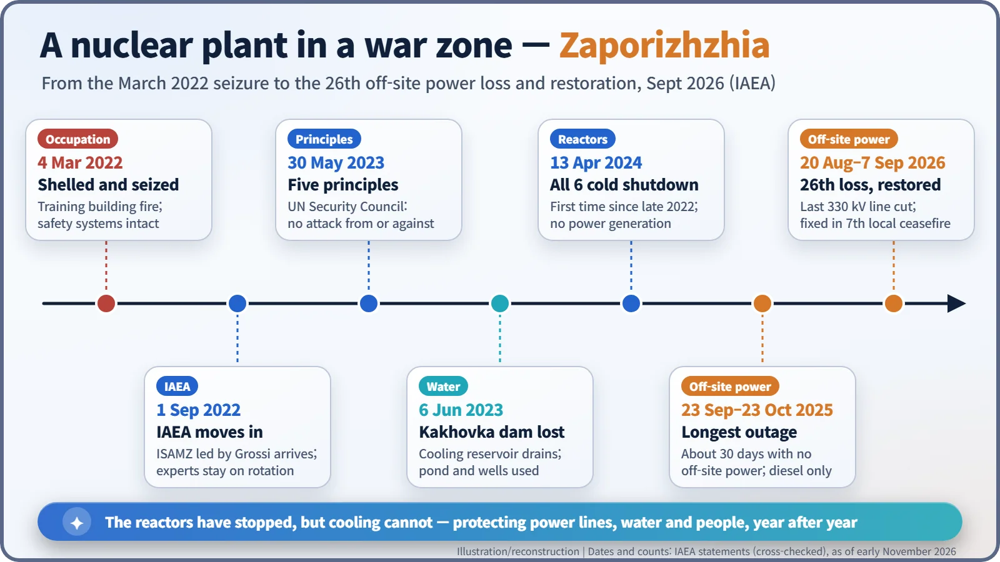
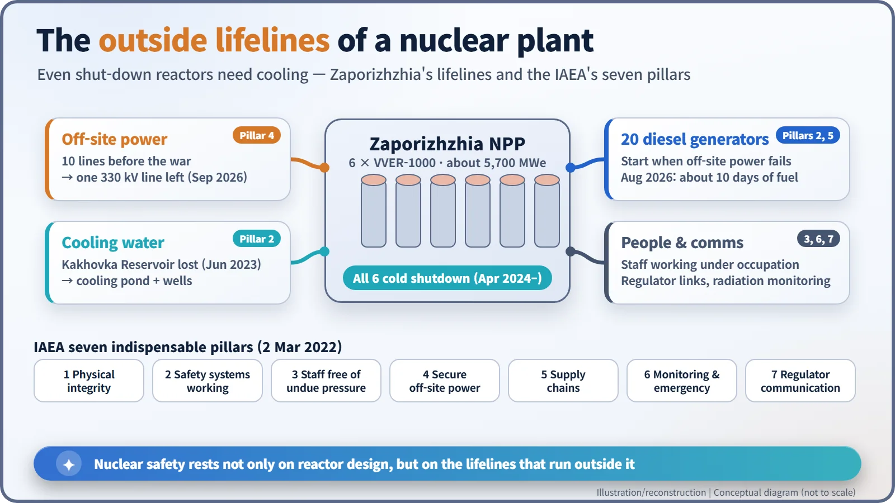
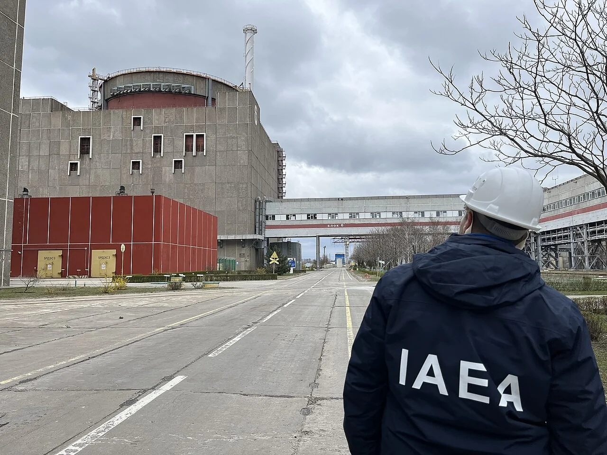

Nuclear History · 285
Hanging by One Line of Ten — Zaporizhzhia, a Nuclear Plant in a War Zone (2022– )
Its six reactors are shut down, but cooling them still depends on power lines, water, diesel and people outside the reactor buildings.
Since March 2022, Zaporizhzhia in Ukraine, Europe's largest nuclear power plant, has sat inside a war zone under Russian military control. Its six reactors have been shut down, but they still need cooling, and that depends on power lines, water, diesel and people outside the reactor buildings. This is the story of how the IAEA has tried to keep those lifelines intact, told through the agency's own statements and reports.
Hanging by one line of ten
Picture a power strip with ten sockets and only one plug left in it. Pull that last plug and the fridge stops. On 20 August 2026, Zaporizhzhia found itself in exactly that position. Of the ten transmission lines it had before the war, the last remaining one, a 330 kV line, was cut. By the count of the International Atomic Energy Agency (IAEA), it was the 26th loss of off-site power since the war began. [4]

Europe's biggest nuclear plant on a front line
The plant stands on the southern bank of the Dnipro River at the town of Enerhodar. It has six Soviet-designed VVER-1000 pressurized water reactors, about 5,700 MWe in total, which makes it the largest nuclear plant in Europe. Its cooling water came from the vast Kakhovka Reservoir, created by damming the river.
Russia launched its full-scale invasion of Ukraine on 24 February 2022. In the early hours of 4 March, the site was shelled during fighting and a fire broke out in the training building. The reactors' safety systems were reported undamaged, but it was the first time an operating large nuclear power plant had been seized in combat. (Some sources date the takeover to 3 March.) Ukrainian staff kept running the plant under occupation. Russia and Ukraine have each blamed the other for attacks on and around the site; the IAEA has, in most cases, not attributed responsibility, and this article follows that wording. [7]
Seven pillars and five principles
Two days earlier, on 2 March 2022, IAEA Director General Rafael Mariano Grossi (1961– ) set out "seven indispensable pillars" of nuclear safety and security in wartime: the physical integrity of the facilities; safety and security systems that work at all times; operating staff able to make decisions free of undue pressure; secure off-site power from the grid; uninterrupted supply chains; radiation monitoring and emergency preparedness; and reliable communication with the regulator. It is a list that puts the conditions outside the reactor on a par with the reactor's own design. [6]
On 1 September 2022, the IAEA Support and Assistance Mission to Zaporizhzhya (ISAMZ), led by Grossi himself, crossed the front line and reached the plant. IAEA experts have been stationed there on rotation ever since. Safeguards inspectors visit, check and leave; having international staff stay inside a nuclear plant in the middle of a crisis, reporting what they see, had few precedents. On 6 September the IAEA reported that all seven pillars had been violated, and on 11 September the last reactor was disconnected from the grid. The plant has not generated electricity since. [7]

On 30 May 2023, Grossi took five principles to the UN Security Council: "There should be no attack of any kind from or against the plant"; the plant should not be used as a store or base for heavy weapons or military personnel; off-site power should not be put at risk; essential structures, systems and components should be protected from attack or sabotage; and no action should undermine these principles. "These principles are to no one's detriment and to everyone's benefit," he said. Ukraine argued that they should also require the withdrawal of Russian personnel. [1]

Why a shut-down reactor still needs power
If the plant makes no electricity, why does it need any? Because nuclear fuel keeps producing heat after fission stops, as its radioactive products decay. This decay heat means the reactors and the spent fuel pools must still be cooled by pumped water, and the pumps run on electricity drawn from the outside grid. The core of the 2011 Fukushima Daiichi accident was the loss of both off-site and emergency power.
When off-site power fails, the plant's 20 emergency diesel generators take over. The weak point is fuel. During the August 2026 outage, diesel stocks fell to about ten days' supply, the regulatory minimum, and operators halved the number of running generators and ran cooling pumps intermittently. "No nuclear power plant should have to reduce the operation of essential cooling systems in order to conserve diesel fuel," Grossi said. [4]
Water was a problem too. When the Kakhovka dam was destroyed on 6 June 2023, most of the reservoir drained away. The plant rationed the water in its on-site cooling pond and, from August that year, began drilling groundwater wells, with around ten in use by the autumn. [2] Meanwhile the reactors were shut down step by step, and on 13 April 2024 all six were in cold shutdown (coolant below 100 °C at atmospheric pressure) for the first time since late 2022. A reactor that has been off for a long time produces far less decay heat, so if cooling is interrupted there is much more time to respond. Comparisons such as "many times worse than Chernobyl" have no basis; but the IAEA's consistent message has been that the situation is still far from safe.

A month-long blackout and a seventh ceasefire
The longest ordeal ran from 23 September to 23 October 2025: about 30 days with no off-site power at all. The plant survived on diesel for a month until the 750 kV line was repaired under a local ceasefire brokered by the IAEA. After that, losses became more frequent. On 14 August 2026 the IAEA reported 25 complete losses of off-site power since the war began, 13 of them in the previous four months, calling the trend "deeply concerning." [5] Six days later came the 26th. Under the seventh local ceasefire arranged by the IAEA, technicians made three days of repairs and power returned on 7 September, after about 18 days. [3] Different organizations count these outages slightly differently.

Where things stand
As of November 2026, based on the public information available (which runs to mid-September), all six units remain in cold shutdown and generate no power, off-site power depends on a single 330 kV line, and IAEA experts remain on site. In October 2022 Russia declared the plant federal Russian property; Ukraine rejected this as illegal. Proposals and talks about how the plant might be run in future continue. [5]
The ending is still open, but one lesson is already clear: nuclear safety depends not only on the design inside the reactor but on the lifelines outside it — power lines, cooling water, people and communications.